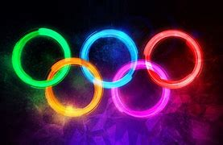
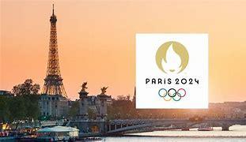
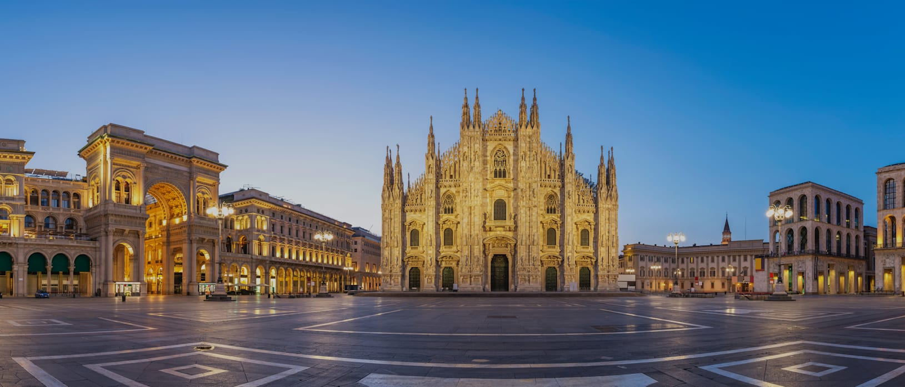
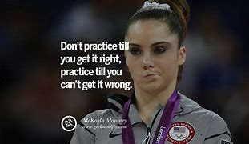

Olympic Sports
The Olympics feature a variety of sports, each with its unique challenges and thrills. From athletics to team sports, there's something for everyone.
A celebration of sports, culture, and international unity. Explore the history and excitement of the Games!
July 26 - August 11, 2024 in Paris, France
February 6 - 22, 2026 in Milan-Cortina, Italy
January 19 - February 1, 2024 in Gangwon, South Korea
The Olympics feature a variety of sports, each with its unique challenges and thrills. From athletics to team sports, there's something for everyone.
The Olympic Flame represents the spirit of the Games. It is lit in Olympia, Greece, and travels to the host city, igniting the cauldron during the Opening Ceremony.
The Olympic flame is lit at Olympia, Greece, several months before the Olympic Games. This ceremony starts the Olympic torch relay, which formally ends with the lighting of the Olympic cauldron during the opening ceremony of the Olympic Games.
The Games have produced legendary athletes who inspire us all. Their stories of perseverance and excellence are what make the Olympics special.
Support your favorite athletes, volunteer, or simply enjoy the Games! Your involvement helps promote the values of excellence, friendship, and respect.
Join Us